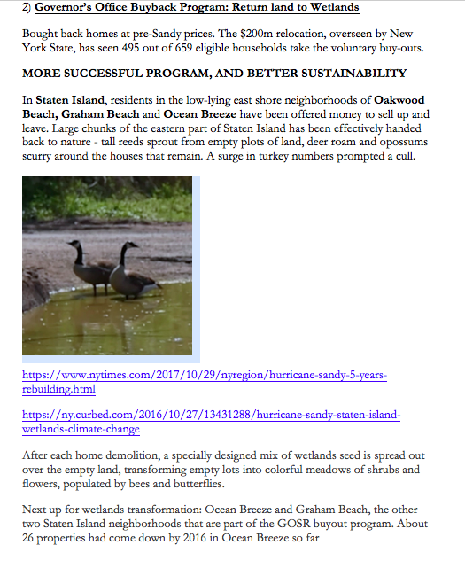
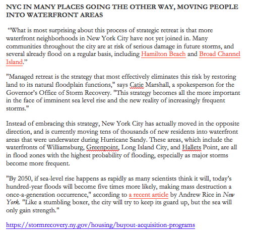

ASSIGNMENT 2 - Proposed Website Design
Here is some background to help inform our framing of the data we discover, as we look to focus in on the experiences of people most affected by Sandy, and what has and should be done. Here is a look at very different NY government programs, from the city and the state, to help those who lost their homes. The philosophies and implementations were very different, with great long-term impact on how these people fared after Sandy.

The Build it Back Program is run by NYC government
The Governor's Buy it Back, Wetlands program was greeted with great enthusiasm by many
Thousands are moving into waterfront areas in NYC, despite the lessons of the past

Some other changes/improvements post-Sandy that may help, but may not be enough